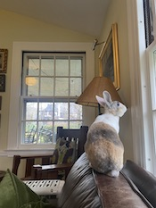
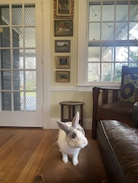
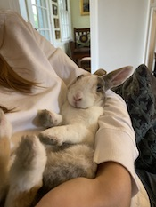
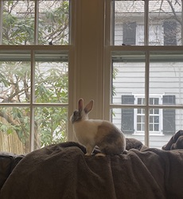
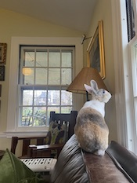
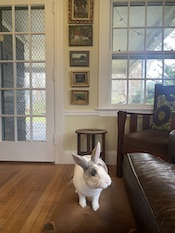

Here are four pictures of Patty I took while pet-sitting him.
  
This is a website dedicated to Patty Melt, a wonderfully lovable bunny. He goes by Patty, Melty, or PM for short.
Here are four pictures of Patty I took while pet-sitting him.
 